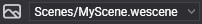

Postprocessing Graph Editor

Postprocessing Graph Editor allows editing the Postprocessing Graph assets. Double click over a postprocessing graph asset shown in Assets Details will open this editor. The editor is composed of 3 main parts:
- Graph Editor
- Compute Effects collection
- Viewport.
Graph Editor
The Graph Editor allows you to create graph nodes to connect the start node (Render) with the last node (Screen). The nodes are computed effects and his parameters, input, and output are defined by his ResourceLayout block.
| Node elements | Description |
|---|---|
| Name | Located on top of the Node is the name of the compute effect used. |
| Divisors | Allows configure the ThreadGroupDivisor X,y and Z to dispatch the compute effect. |
| Parameters | Allows configuring constant buffer or structure buffer properties to the compute effect. |
| Input | Allows set Textures and Samplers to the compute effect. |
| Output | Allows set RWTextures to the compute effect. |

Tip
The node inputs can only be connected with a single node output but a node output can be connected with multiple node inputs.
Toolbox
The toolbox is located on the top side of the graph editor and allows to manipulate the graph view.
| Icon | Description |
|---|---|
 |
Delete the selected node. |
 |
Execute an algorithm to relocated nodes and avoid node overlapping. |
 |
Zoom in/out the graph. |
 |
Center the view over the graph. |
| Actions | Description |
|---|---|
| Left mouse button | Selection tool. Allows to select a single or multiple nodes. |
| Right mouse button | Cut tool. Allows the draw a cut line to break conections. |
| Medium mouse button | Pan tool. Allows to move along the graph. |
| Mouse wheel | Allows to make zoom in/out over the graph. |
Compuse Effects Collection
In this panel, you can find all compute effects existing in the project and drag an effect to the graph editor to use it.
Viewport
The vewport allows to inspect the result of the postprocessing graph applied to the scene:
Note
To refresh the graph changes in the viewport, you need to save all graph changes.
| Icon | Description |
|---|---|
|  | The combobox allows to select the current scene for the viewport. |
 |
Opens the camera settings to configure all its parameters. The camera changes are not stored so it is only for testing proposes. |
The viewport allows you a simple interaction to easily inspect the scene:
| Actions | Description |
|---|---|
W, S, D, A |
Move camera along the scene. |
| Right mouse button | Rotates camera. |
| Medium mouse button | Camera panning. |
| Mouse wheel | Camera zoom in/out. |